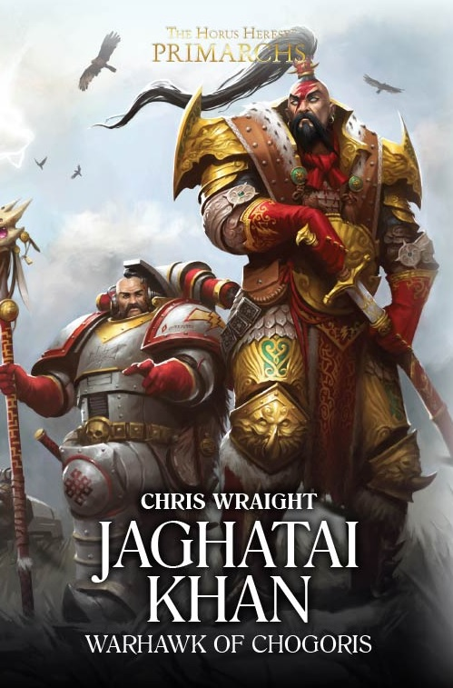

JAGHATAI KHAN: WARHAWK OF CHOGORIS

Author: Chris Wraight
Format: Novel
Told as a series of episodes across the Great Crusade, this follows the Khan and his Legion as their culture of warrior mysticism sits ever more awkwardly with the Imperium's ideals of Unity. Drawn against his instincts into the growing argument over psychic power in the Legions, Jaghatai must decide where his deepest allegiance really lies.
Introduction reviewed against Black Library’s description on 2026-09-27. The publisher page may contain spoilers.
Publication facts: publisher source, checked 2026-09-26.
Open this work in the interactive Archive to track reading progress and explore related works.
Take the three-question memory check for this work. The quiz contains story spoilers.